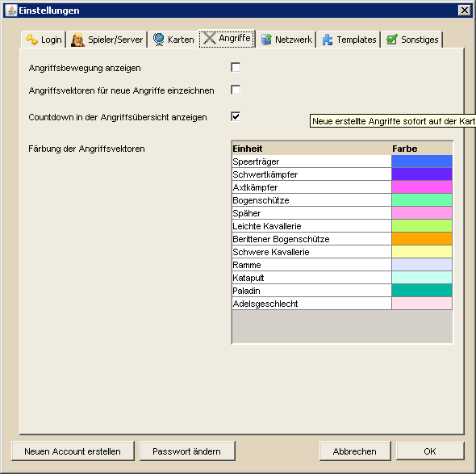

Angriffseinstellungen |
|
|  | |
| In den Angriffseinstellungen kann man die Darstellung von Angriffen konfigurieren. Angriffe können auf der Hauptkarte als Linien (Vektoren) zwischen Start- und Zieldorf eingezeichnet werden. Zusätzlich besteht die Möglichkeit, über die Aktivierung der Option "Angriffsbewegung anzeigen" die Truppenart und ihre derzeitige Position zwischen Start und Ziel auf der Hauptkarte darzustellen. Natürlich unter der Voraussetzung, dass sie zu der für den Angriff eingestellten Abschickzeit wirklich losgeschickt wurden. Ob ein Angriff eingezeichnet wird oder nicht, kann für jeden Angriff einzeln in der Angriffsübersicht festgelegt werden. Wenn man einen neuen Angriff mit Hilfe eines der Angriffswerkzeuge erstellt, so wird dieser standardmäßig nicht auf der Karte eingezeichnet. Will man, dass neu erstellte Angriffe automatisch eingezeichnet werden, so muss man die Option "Angriffsvektoren für neue Angriffe einzeichnen" aktivieren. Standardmäßig wird in der Angriffsübersicht eine Spalte angezeigt, welche die verbleibende Zeit bis zu einem Angriff als Countdown anzeigt. Unter Umständen kann dieses Feature jedoch zu starken Performanceproblemen führen. Daher könnt ihr die Spalte für den Countdown entweder in der Angriffsübersicht ausblenden oder hier direkt deaktivieren, falls ihr negative Effekte bemerken solltet. Eine weitere Option ist die Anzeige der Laufrichtung für Angriffsvektoren. Hier werden statt einfachen Linien zusätzlich Pfeile bei Angriffen auf der Hauptkarte eingezeichnet. Auch hier gilt jedoch, dass dieses Feature sehr performancelastig ist. Daher sollte es im Normalfall deaktiviert bleiben. Letztendlich gibt es noch die Möglichkeit die Angriffsvektoren, der langsamsten beteiligten Einheit entsprechend, in unterschiedlichen Farben darzustellen. Dies dient der besseren Unterscheidung auf der Hauptkarte. |
|
| Für den häufig vorkommenden Fall, dass mehrere Angriffe zwischen identischen Herkunfts- und Zieldörfern, z.B. Clean-Off und AGs, eingezeichnet werden sollen, wird immer der Angriffsvektor des Angriffs gezeichnet, der als letztes erstellt wurde. Dies ist unabhängig von der Reihenfolge in der Angriffsübersicht oder der Lauf- oder Ankunftszeit. Wird ein Angriffsvektore den man sehen will verdeckt, bleibt momentan als einzige Möglichkeit, alle anderen Angriffsvektoren zwischen zwei Dörfern in der Angriffsübersicht auszublenden. | |